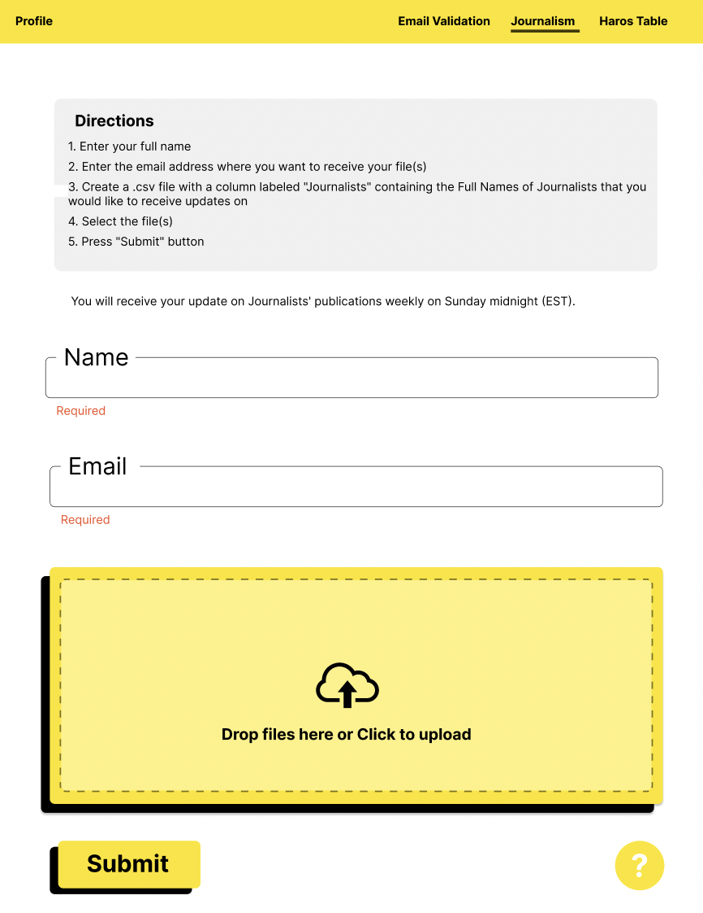

From May 2022 to August 2022, I had a part-time internship with a startup company called Lightyear Strategies. I worked remotely but the company's headquarters and main office is located in Boston, Massachusetts. My role as a frontend developer, along with two other interns, entailed creating webpages for three of the company's tools: Journalist Tracker, Email Validator, and HARO Table. Specifically, my focus was the Journalist Tracker. Using HTML, CSS, and Javascript, I coded a webpage to manage profiles for individual trackers, similar to LinkedIn but for journalists as the founder of Lightyear Strategies liked to refer to it as. I also used Figma to build an outline for the design and received multiple rounds of feedback as I edited and revised my drafts.
Over the course of ten weeks, I went through two design iterations before settling on the final product. Prior to taking on this role, I had only had experience coding simple webpages for high school computer science classes. None of the assignments I had done before required so much attention to detail and professional feedback. My first design was created with the two other interns. One of the pages is shown below:
As seen, the hiearchial structure of the webpage was very simplistic and basic. After the above design was reviewed, I took on the role of redesigning the page and making more improvements.
Although ten weeks may seem like a long time, it still was not nearly enough time for the company to actively use the webpages we as interns spent our summers coding. I did not choose to continue my internship during the fall semester of the school year, but the webpage I made would serve as a guideline for further development that senior developers would take on.
This internship experience was very fulfilling for me. It was my first taste of what industry might look like, albeit this company was operating on a much smaller scale than most. I learned how to communicate with my fellow interns as well as others in my team, including the backend developers, marketers, publicists, my manager, and my boss. Although my team was the only group actively working on the website, it was a company-wide effort to get everyone's input on the design and functionality. I enjoyed receiving feedback from others because the constructive criticism only improved my skills as a designer and a programmer.